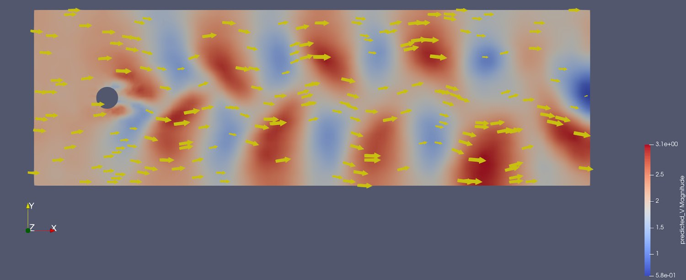

Something in your workflow decides what to throw away.
Usually a number in a config file. Write every hundredth timestep,
because that is what the filesystem will take, and hope the one you needed was
not among the other ninety-nine. That decision gets made before anyone has looked
at the run.
Catalyst does the analysis while the data is still in memory: on
the solver's own nodes, streamed to neighbouring ones, or both. Never by way of
the filesystem. The decision does not go away. It moves to after you have seen
what you have.
Why the number in that config file is small: on Titan, compute bandwidth was
125 PB/s
against 1.4 TB/s
to storage. A gap near 89,000 : 1, and widening.
Moreland, IEEE CG&A 36(2), 2016, Fig. 1Like
every number on this page, that one links to where it came from.
Feature extractionQ-criterion vortex coresEngineering quantitysectional liftEngineering quantitysectional dragStatisticspressure distribution
Four products from one production CFD
run, requested in plain language while it was still solving. Catalyst served
the live simulation to ParaView; trame drew the browser session; an MCP layer
turned the question into filters. No
solution files were written. The same session reads from disk instead,
unchanged, when the run is already over.
Watch the two numbers separate.
A WarpX timestep on Frontier produces a 5.75 billion element mesh,
1.16 TB. Post-hoc, all of it has to land on disk before you can look at any of
it, and then be read back again to do the analysis. In situ, only the results you
asked for are ever written.
Solver produced
0 GB
Written to disk
0 GB
timestep 0 · reduction n/a
· pipeline render one frame + integrate a scalar
Where these numbers come from. The published WarpX timestep is a 5.75 billion
element mesh at 1.16 TB, so N ≈ 1,792 on a side. Twenty
integrated quantities are 160 bytes. A 1920×1080 frame is about
2 MB whatever the mesh size. A slice is N² = 3.2 million
cells, and as data with six fields at single precision that is roughly
0.18 GB. Writing everything is 1.16 TB.
Six orders of magnitude separate the
first from the last, and the choice is yours, not the filesystem's.
Only the last option registers on the lower bar. The other three are drawn as a
marker because at this scale they are a rounding error, which is the entire
argument.
This is not a choice between in situ visualization and
post-processing. You may still write files, still load them in ParaView, still explore
them afterwards. In situ is allows you to decide what gets extracted and which files, so what lands on disk is your say.
You probably arrived here with one of these.
Nobody goes looking for in situ analysis. They go looking because the
write-then-look workflow has started costing them something they can name.
They are all the same problem wearing different clothes: the
decision about what to keep is made before anyone knows what matters.
Every run, someone decides which handful of timesteps we can
afford to keep. We are guessing, and sometimes we guess wrong and rerun.
schedule: a rerun is not a storage problem. It is weeks
and a second allocation.
Our engineering results come from sparse snapshots. Forces and
flow structures between them are simply not measured.
fidelity: you are reporting on a sampled version of a
simulation you paid to run in full.
A three-day job diverged in hour four and nobody knew until it
finished.
machine time: nothing was watching, because watching
meant waiting for the write.
An optimisation campaign is hundreds of runs. Storing full-field
output for every ensemble member is not something we can do.
design cycle: the size of the space you can explore is
set by your disk, not your solver.
We want to train a surrogate on the high-fidelity runs. The data
it needs was thrown away at write time.
capability: you cannot train on timesteps that were
never written.
Two solvers exchange fields every timestep, through the disk,
across coupling code we wrote and now maintain ourselves.
headcount: bespoke plumbing that no one else can
support and no one wants to own.
You link a stub. ParaView loads at runtime.
The Catalyst API is an ABI-stable C interface. Your solver links
libcatalyst, a small BSD-licensed library with one header. The
ParaView implementation is discovered at run time.
ParaView is not in your build system, not in your dependency tree, and not in
your support matrix.
The same three calls serve all three placements. Whether the pipeline executes
on the solver's ranks, on a separate allocation fed over the network, or splits
the difference by reducing in place and rendering elsewhere, is a launch-time
decision. Your adaptor does not know which one it is feeding.
What runs at run time is a Python pipeline, and that is a wider door than it
sounds. Your solver's arrays arrive as NumPy, so NumPy, SciPy, pandas, PyTorch,
scikit-learn, Matplotlib and any wrapped C++ library are all in scope, operating
on live simulation state. Published in-situ training work does exactly this:
vtk_to_numpy on the field, torch.from_numpy, train,
plot the loss, render the prediction against ground truth, all in one script.
The ParaView implementation adds two decades of VTK on top: hundreds of filters,
data reduction and resampling, temporal and unsteady analysis, statistics,
particle tracking and parallel rendering. Or write your own implementation
against the same API. Several groups have, including ADIOS2/Fides staging, a
workflow composer, and a game-engine bridge.
A site that wants none of it ships nothing extra; a site that wants all of it
sets an environment variable.
A C interface because everything binds to C. There is a worked example for each:
C,
C++,
Fortran 90 and
Python.
Your solver's language is not the question; whether it can describe its mesh is.
Swap implementations by pointing an environment variable at a
different libcatalyst.so.2. No recompile, and pipelines themselves
can be added and
removed while the solver runs.
/* the entire integration surface */
#include <catalyst.h>
// once, at startupcatalyst_initialize(params);
// every timestep: describe the mesh you already have
conduit_node_set_path_external_float64_ptr(
mesh, "fields/pressure/values", p, ncells);
catalyst_execute(params);
// once, at shutdowncatalyst_finalize(params);
Fields are passed by pointer.
Catalyst reads your arrays in place: no copy, no reformat, GPU-resident data
stays on the GPU. A
D2Q9 lattice-Boltzmann
example keeps four field arrays in device memory for the whole run, hands
Catalyst the raw pointers through set_external, and analyses them
on the same buffer the solver just wrote, with no per-step transfer to host.
# the other side: your pipeline script, in Pythonfrom paraview.simple import *
from vtk.util.numpy_support import vtk_to_numpy
import numpy as np, torch
defcatalyst_execute(info):
data = servermanager.Fetch(MergeBlocks(producer))
omega = vtk_to_numpy(data.GetPointData().GetArray("omega"))
# it is just an array now, so do whatever you do
loss = model.train_step(torch.from_numpy(omega).float())
np.save(f"kpi_{info.cycle}.npy", omega.mean(axis=0))
No C++ to write, no rebuild to
change the analysis, and nothing stopping you importing whatever the rest of your
field already uses.
An isosurface tracked through a live AMReX run. The AMR block
structure is the solver's own, read in place, refining as the front moves.
If you sell simulation software, the argument is different.
Your problem isn't the filesystem. It's that post-processing (plots, exports,
derived quantities, comparison tooling, rendering) is a permanent line item on
your roadmap and it never stops asking for headcount.
Catalyst is BSD, so it ships inside your product with no royalty
and no copyleft. See the licence table below.
You stop taking analysis feature requests
Ship one adaptor and the pipeline becomes a Python script. "Can you add this
plot, this export, this derived metric" turns into something your customer
writes for themselves, on their own schedule, without a release from you.
You stop maintaining an analysis stack
Parallel rendering, unstructured meshes and AMR, GPU pipelines, temporal
analysis, statistics, resampling, twenty file formats. That is a quarter
century of work in VTK and ParaView that you can link instead of rebuild, and
keep getting for free as it improves.
Your customers already know the interface
Engineers author pipelines in the ParaView GUI they have used for years and
hand the script to your solver. There is no new tool for them to learn and no
training material for you to write.
Instrument once. All of this follows.
These are not separate products or separate integrations. Each one is a Python
pipeline against the same three calls, chosen at run time. The products span
the same range: rendered frames, integrated engineering quantities, geometric
extracts, explorable databases, training data, trained models, corrections steered
back into the solver, and artifacts small enough to email a collaborator.
That is the part worth sitting with if you ship simulation software. You
instrument once; your users reach all of it without another release from you.
Change a parameter or boundary condition mid-run through catalyst_results. An on-device reduction returned eight bytes to the driver and the field never left the GPU.
Ask a question in plain language; deterministic filters compute the answer; the model explains it. It never writes the analysis code.
Then couple, and run many
Where the simulation is not one solver producing one answer.
Co-simulation
Two or more solvers exchange fields every timestep through a common in-memory mesh description, instead of through disk and bespoke glue. What makes it work: consistent schema, careful partition handling, complete metadata.
Digital twins
Assimilate live telemetry, steer the model to track the asset, stay faster than real time using surrogates.
Ensembles and DoE
Hundreds of runs where full-field output per member is impossible. Extract quantities of interest at full temporal fidelity instead.
Adaptive sampling
Feed those summaries to an optimiser that decides where in the design space to run next.
And where post-hoc stops being an option
The cases that motivated all of this in the first place.
Runs whose per-timestep output exceeds what the filesystem can absorb. The analysis goes to the data, on the same nodes or adjacent ones, because the data cannot go to the analysis.
Chain and orchestrate several of the above as modular stages in one run.
Can you trust a model near your science?
It is the fair objection to the last group above, so it is worth answering
directly rather than in a footnote. An engineer types what they want to know. A
language model interprets the
intent and plans; deterministic ParaView filters do the computing; the model
explains the result it is handed. It never writes the analysis code.
A domain ontology constrains planning to valid analysis chains, so whole classes
of failure disappear by construction: no hallucinated API calls, no silently
missing pipeline stage, no script that runs cleanly and returns the wrong number.
Point that at a Catalyst-instrumented run and the loop closes: extract, steer and
monitor a live simulation from a browser, with a scalable pvserver backend
carrying it to production-scale data.
The same session works either way. Catalyst serves the running solver when there
is one; the identical pipeline reads files when the run is already finished. The
engineer asks the same question and does not need to know which mode they are in,
so adopting this does not mean abandoning the analyses you already have.
Two packages build on the same substrate: catalyst-ml for
in situ training and inference, and catalyst-cosim for multi-physics
coupling. Kitware is extending this with NASA and the University of Colorado
Boulder, so validated solvers gain modern AI workflows without being rewritten.
roadmap →
// intent, execution and explanation stay separate
engineer → LLM plans (constrained by ontology)→ MCP
→ ParaView filters (deterministic)→ Catalyst (the live solver)→ LLM explains what came back
The ablation locates the ontology's effect precisely: it does not change
which tools get selected, which was already reliable. It corrects how results
are read.
Measure
Without ontology
With ontology
Interpretation accuracy
0.41
0.91

Training coupled to the running solver.
use case →
NEEDS CITATION before publishing. Link the benchmark, workload and
hardware. Currently the least supported numbers on the page.
Training extract path
Representative workload
Synchronous
9.14 s
Asynchronous
0.65 s
Sustained throughput on GPU
80,000+ steps/s
Surrogates and reduced-order models
train on the same runtime stream, with no disk round trip and GPU-resident data
staying on the GPU. That gap is training that keeps pace with the solver versus
training that throttles it.
None of that is speculative.
Every capability above is running in production somewhere, at scale, in codes
you have heard of. Every number and every name on this page links to its
source: a paper, a lab report, or the adaptor's own code. Where we cannot
link it, we say so.
Across CFD, combustion, shock physics, plasma, climate, biomedical,
rotorcraft and astrophysics, in national labs, national weather services,
universities and commercial products.
And on the machines that matter: the runs behind this page's numbers executed
on Frontier,
Titan,
Cielo and
Beskow.
workstation to exascale on the same three calls.
Every linked name goes straight to its evidence: a paper, a lab
report, or the adaptor source. Dashed names are confirmed integrations whose
public reference we are still pinning down.
The papers below are the ones to read before committing engineering time. Every
entry links to its DOI or an open-access copy.
Citing Catalyst
Cite the AIAA 2026 paper for current capability, the 2021 ISC paper for the
API itself, and the 2015 ISAV paper for the original design. If you publish
work that uses Catalyst, tell us, and we will add it.
Extracts are smaller, not free. An isosurface can land almost entirely on a
handful of ranks, and that imbalance defeats ordinary collective writes. Read
this before assuming reduction ends the conversation.
The honest answer depends on your pipeline, and nobody can give it to you
without knowing it. But the published cost studies do narrow it down, and the
reasoning is worth having before you talk to anyone, including us.
Integrating a quantity of interest, thresholding, extracting a surface on a
modest mesh. These cost a fraction of a timestep.
Yes → run it in line. Sandia's conclusion after
10.58M processor-hours: for analysis that does not hinder solver scalability,
in situ is the simplest and best choice, because the analysis costs less than
allocating extra nodes and moving data to them.
Oldfield et al., ICS 2014
02Does your analysis scale as well as your solver?
Parallel image compositing is the usual culprit. It is communication-bound,
and it degrades at high concurrency in a way the physics does not.
No → move it in transit. Rendering at lower
concurrency on dedicated nodes was measured at 4× cheaper for volume rendering
and 3–6× for isosurfacing. This is the fix for the compositing wall, not a
reason to avoid in situ.
Kress et al., ISC HPC 2020
03Are you scaling up, or already at the top end?
In-line visualization cost grew from 0.6× to 2.2× of solver cycle time across
8 to 1024 nodes on the same problem, while data transfer cost barely moved.
Scaling up → the case for in transit strengthens as you
grow. With one caveat from Sandia: in transit only pays if the compute
nodes have enough work to hide the analysis. At 32K cores with too little work
per node, the wait time erased the benefit.
Kress 2020 · Oldfield 2014
04Should the pipeline block the solver, or not?
Since 2.1, catalyst_execute can snapshot the timestep onto a
bounded queue and return immediately, while a worker thread runs the pipeline
alongside the next solver step.
Depends on the ratio of pipeline cost to step cost. A
couple of reductions per step gains little and should stay synchronous. A
heavier pipeline gains a lot. In the 2.1 demonstration the solver went from
blocked 33% of wall-clock to 6%, completing 27% more
iterations. GPU solvers usually leave CPU cores idle, which is exactly what
async is for. The trade is bounded memory for the queue.
Catalyst 2.1 demonstration, 2026
05Can you say in advance what you will need to see?
The genuine constraint of in situ: the data is transient, so something has to
be specified before the run.
Not entirely → you still have four options. Render an
image database across many viewpoints and explore it afterwards; trigger on a
detected feature; write reduced extracts for post hoc work; or attach a live
session and ask questions of the run as it goes. Catalyst supports batch and
interactive simultaneously.
Moreland, IEEE CG&A 2016
06Is your filesystem actually keeping up today?
Worth asking honestly. On Cielo in 2014, with a strong Lustre filesystem and
one moderate analysis every ten cycles, post-processing performed well.
If yes → keep post-processing, and use in situ to choose
what you keep. That study's own conclusion was that all three approaches
are needed and in situ does not displace post-processing. The gap has widened
since, and at a projected 60 TB/s exascale I/O lands under 1% of what the
simulation generates, but the honest starting point is that this is additive.
Oldfield et al., ICS 2014
07What are you actually optimising for?
Cost per run, time to answer, and capability you do not currently have are
three different goals with three different answers.
Capability is usually the real one. Most teams do not adopt
in situ to save money on storage. They adopt it because there is an analysis
they cannot do at all: training data that was deleted at write time, a
divergence nobody saw until Friday, an ensemble too large to keep. If that is
your case, the cost comparison matters less than you think.
our read of the adoption corpus, not a published finding
What it actually costs to adopt.
Effort scales with mesh complexity, not with how much analysis you want.
A structured-mesh adaptor is a few hundred lines. Unstructured with AMR is more.
Once the adaptor exists, every pipeline your users will ever want is a Python
script they write themselves, with no further solver changes.
The clearest number we have: converting LULESH from the legacy
API to Catalyst 2.0 cut the adaptor roughly in half. The
tutorial walks it in
six stages, from an uninstrumented solver to a steered one. Read it before
estimating your own.
On runtime cost, be careful what you compare against. A solve with
nothing attached is a floor, not an option. You still have to get the data out.
The real comparison is the whole post-hoc pipeline: write every timestep, move it,
read it back, then post-process. Amortised over a run, in situ usually wins by a
lot.
But it depends entirely on what you ask the session to do. Catalyst
costs whatever your pipeline costs, however often you run it. Integrating a
quantity of interest is close to free. Rendering 4K volumes every timestep is not.
Nobody should tell you the answer without knowing your pipeline.
Reported from published conversions and third-party integrations.
Measure
Legacy API
Catalyst 2.0
LULESH adaptor size
325 lines
155 lines
Headers to include
13
1
Build system change
CMake conversion required
two variables in the Makefile
ParaView SDK at build time
required
not required
PLUTO adaptor (third party)
n/a
273 lines
LULESH: the 325-to-155-line conversion above, running.
use case →
The PLUTO adaptor was written by one
graduate student for a code with no official Catalyst support: polar grid,
zero-copy field passing, 273 lines, and a generator script to emit it. They then
published
a walkthrough so others could repeat it.
What drives the runtime cost
Four things, roughly in order. Tune the first two and most workloads land
where you want them.
What the pipeline computes
A scalar integral over the field is nearly free. Isosurface extraction is
modest. Volume rendering at high resolution is a real cost, and should be
budgeted like one.
How often it runs
Every timestep is a choice, not a requirement. Most teams run the expensive
parts on a stride and the cheap KPIs every step.
Mesh conversion
Translating your native domain into the Conduit Mesh Blueprint is typically
the most expensive part of the adaptor itself. Fields can be passed by
pointer; topology usually cannot.
Where the data already is
GPU-resident data that stays on the GPU avoids the transfer entirely. Data
that has to be marshalled across the bus does not.
BSD 3-Clause. Ship it in your product.
Catalyst and ParaView are both BSD 3-Clause. Redistribute inside a commercial
product, royalty free, with no copyleft obligation and no per-seat licence.
Ask us for the full transitive dependency list in writing, because legal review
usually wants it, and we would rather send it up front.
Component
Licence
Catalyst (the stub you link)
BSD 3-Clause
ParaView implementation
BSD 3-Clause
VTK
BSD 3-Clause
Conduit
BSD 3-Clause
Or have the people who wrote it do the integration.
Kitware develops ParaView and Catalyst. Start with a bounded piece of work
rather than an open-ended project.
Every engagement begins with the assessment, so you get an
architecture and an effort estimate before committing to the larger work.
Integration assessment
We review your solver's data structures and parallel decomposition, then
deliver an adaptor architecture, an effort estimate in engineer-weeks, and the
performance risks worth knowing about first.
fixed fee · 2–3 weeks · written deliverable
Adaptor implementation
We write the adaptor against your build, upstream it if you want it
upstreamed, and hand over with your engineers able to maintain it.
fixed scope, priced from the assessment
Support subscription
Named response commitment, version-migration help, and priority on fixes that
block your release. For teams shipping Catalyst inside a product.
Not a sales demo. Clone the examples repository and run the same integration
patterns this page describes: sync and async execution, GPU device pointers,
closed-loop steering, dynamic pipelines, adaptors in four languages.
Start with the LULESH tutorial if you want the graduated path, or
the LBM cylinder if you want to see all three GPU patterns at once.
git clone https://gitlab.kitware.com/paraview/catalyst-examples
cd catalyst-examples/ParaView/Lulesh-tutorial# six versions, uninstrumented through steered
ls
Version0 Version1 Version2 Version3 Version4 Version5
A prebuilt container is on the way
for a zero-build first look. Until then the examples build against an installed
ParaView, and the tutorial's first version needs no Catalyst at all.